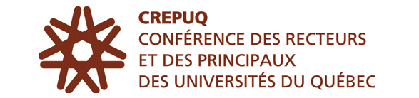

<div class="content" xmlns="http://www.w3.org/1999/html" xmlns="http://www.w3.org/1999/html">
  <div class="text">
    <button class="button">
      <a class="link" (click)="goHome()">Retour à l'accueil</a>
    </button>
    <div class="img-container">
    
    <h1>Bienvenue dans le catalogue de programmes d'échanges </h1>
      <div class="img-container">
        
        <h2>
        <span style="font-family:Arial"> 1) ERASMUS <br> </span>
        </h2>
        <p>Le nouveau programme Erasmus+ vise à soutenir des actions dans les domaines de l’enseignement, de
          la formation, de la jeunesse et du sport pour la période 2014-2020.<br>
      Le programme vise à donner aux étudiants la possibilité de séjourner à l’étranger pour renforcer leurs
          compétences et accroître leur employabilité.<br>
    </p>

        <div class="img-container">
          
          <h3>
    <span style="font-family: Times"> 2) BCI <br> </span>
          </h3>
      <p>Ce programme permet à tous les étudiants inscrits à Polytech Nice-Sophia de poursuivre une partie de leurs études
          dans un établissement universitaire québécois, en majorité francophone.</p>

          <div class="img-container">
            
            <h4>
          <span style="font-family: Times"> 3) CREPUQ</span>
            </h4>
              <p>Le programme CREPUQ, ou la Conférence des Recteurs et des
            Principauxdes Universités du Québec a pour but d'aider les étudiants français à effectuer une mobilité au
            sein desuniversités québecoise.Des étudiants français peuvent donc partir chaque année au sein d'une
            université partenaire au Québec, et y effectuer
            une année d'études.
              </p>
            <div class="img-container">
              
              <h5>
                <span style="font-family: Times" > 4) ISEP  </span>
              </h5>
      ISEP est un réseau qui regroupe plus de 300 Universités dans le monde entier, dont 150 aux États-Unis
      et 165 dans 55 Pays du globe.
      L'Université Nice Sophia Antipolis est membre de ce réseau depuis 1983.
      Le programme ISEP permet donc de réaliser aussi un séjour d’études dans certains établissements européens.
      Ce programme offre à un public diversifié d'étudiants l’opportunité de bénéficier d'une expérience de formation
      dans des Pays étrangers
      où les frais de scolarité sont plutôt élevés, à des tarifs compétitifs.
      De nombreux établissements européens sont adhérents de ce programme.A l’UNS c’est l'IAE qui gère les programmes
      ISEP pour le compte de l’université.


    <br>
              <button class="button">
                <a class="link" (click)="goHome()">Retour à l'accueil</a>
              </button>
  </div>
</div>
